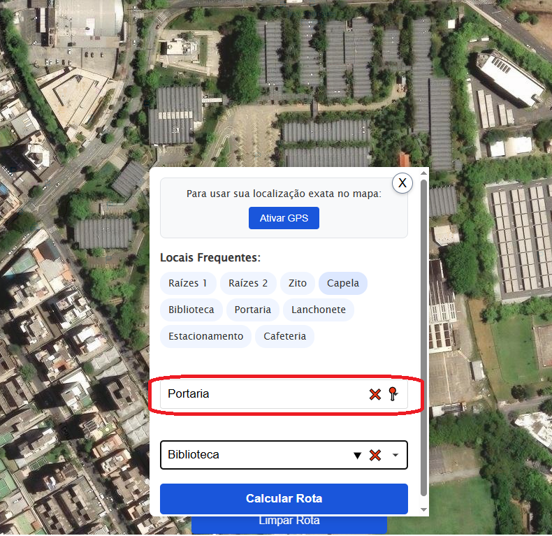
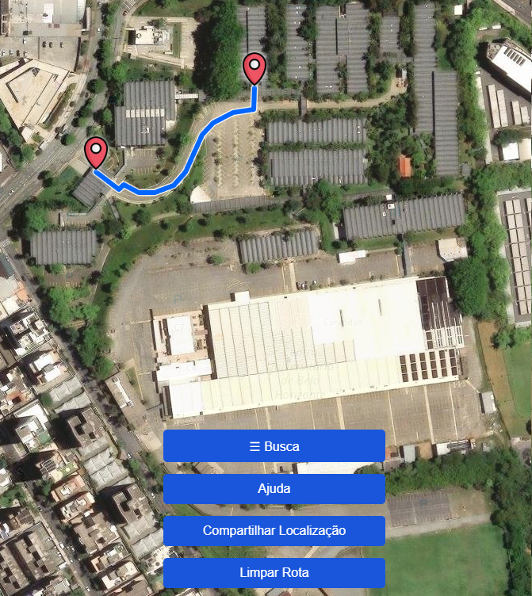

Como utilizar o sistema de localização
Aprenda a encontrar locais no campus da UniBH com facilidade!
1. Clique em “Buscar”
Use o botão de busca no centro da tela para começar a navegação.
2. Adicione sua localização
Digite onde você está (como portaria ou estacionamento) no primeiro campo.
3. Escolha o destino
No segundo campo, digite para onde quer ir (bloco, setor...)
4. Calcule a rota

Depois de preencher os dois campos, clique em “Calcular Rota”.
5. Siga o caminho
O mapa mostrará o caminho mais rápido até o local escolhido.
Dicas
Preste atenção nas placas do campus para saber onde está e facilitar o uso do mapa.
Utilize o botão de GPS para preencher sua localização automaticamente.
Pergunte aos funcionários da instituição durante o caminho, caso tenha dúvidas.
Curiosidades do Projeto
Projeto feito pela turma de Engenharia de Software (5º período) do UniBH, com o intuito de ajudar novos alunos a se localizarem no campus.
Participantes: Andre, Bernardo Luiz, Breno Yohan, Eduardo, Guilherme Lustosa, João Victor Oliveira, Laysla, Marian